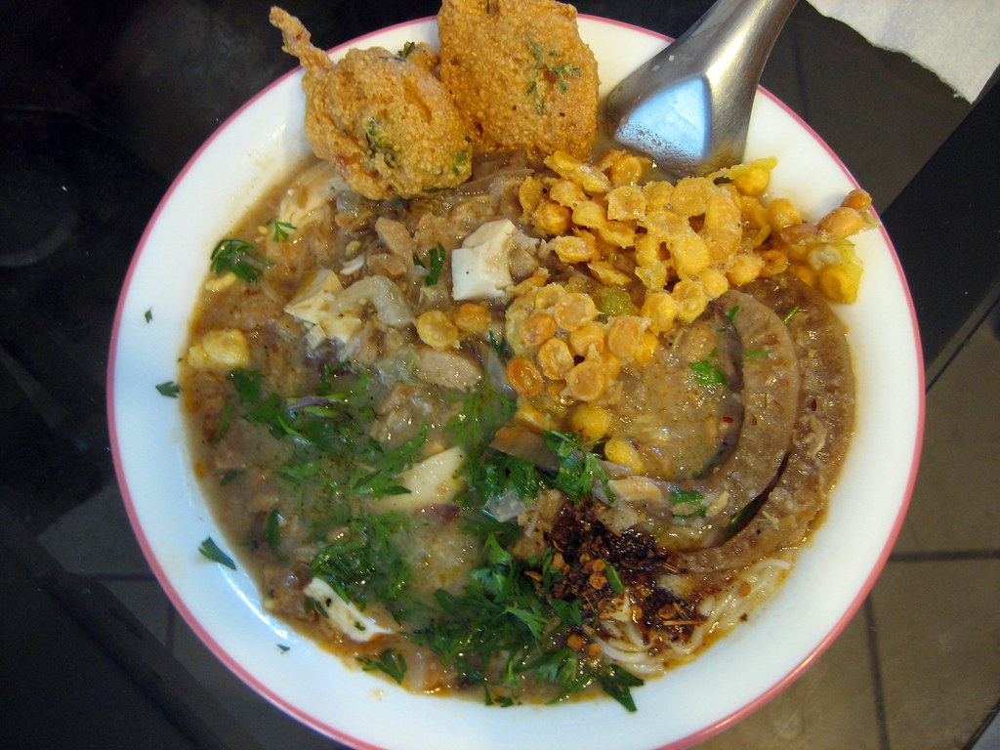

Mohinga

Mohinga
Mohinga, a beloved Burmese dish, is a flavorful fish-based noodle soup that’s often enjoyed for breakfast in Myanmar.
Ingredients
Broth
- 500g catfish or any mild white fish (or fish stock for a shortcut)
- 1.5 liters water (for the broth base)
- 1-2 banana stems, sliced thinly (or substitute with cabbage or green beans)
- 2-3 tablespoons rice flour (for thickening the broth)
- 2 stalks lemongrass, finely chopped
- 2-3 cloves garlic, minced
- 1 medium onion, finely chopped
- 1 tablespoon ginger, minced
- 1-2 teaspoons turmeric powder
- 1 teaspoon paprika or mild chili powder
- 2-3 tablespoons fish sauce
Noodles
- 400g rice vermicelli noodles
Garnishes and Toppings
- 2-3 hard-boiled eggs, halved
- Fresh cilantro, chopped
- Crispy fried onions
- Lime wedges
- Fresh green chilies or chili powder (optional for added spice)
- Fish sauce (for additional seasoning)
Steps
- Cook Fish: Boil fish until tender, remove, shred, and set aside. Reserve the broth.
- Sauté Aromatics: In a pot, sauté garlic, onion, lemongrass, ginger, turmeric, and paprika.
- Combine: Add shredded fish, reserved broth, and banana stem (or cabbage) to the pot. Simmer.
- Thicken: Mix rice flour with water to make a paste, then stir into the broth.
- Season: Add fish sauce and adjust to taste.
- Prepare Noodles: Cook and rinse vermicelli noodles.
- Assemble: Place noodles in bowls, pour broth, and top with garnishes.
- Serve: Add boiled egg, cilantro, fried onions, and lime wedges.